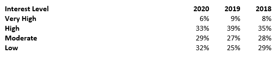
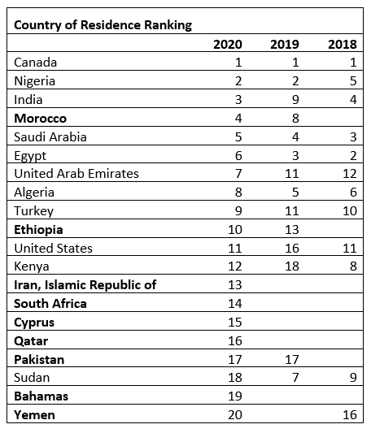

By Group5 | Dec 10, 2021 | Article
Lead generation, especially digital lead generation, has taken on a new level of importance in COVID. Generating tens of thousands of student leads on the SchoolFinder Platform, we were interested in finding out what this meant in terms of student behaviour. We compared the leads generated in October 2020 against the previous two years. We found some interesting results.
This past October we had 21,507 requests made to 117 schools by 4,803 students. The average number of schools in a student request has increased to 4.48 schools – up 24% over last year. And the number of leads that schools on the platform received has increased by 37% to 184 on average.
Looking at the “Interest Level” which indicates the number of schools in a single request, the “Very High” level (where a student has requested information from only one school) has seen the largest decline. And “Low” level (where students are requesting information from dozens of schools) has seen the largest increase.
This shift may be due in part to COVID where students are considering online programs and feel less constrained by geography, and perhaps also feel less certain about their educational path.
The good news is that more schools are likely to be on the short list … the less favourable news is that there is more competition and it may, therefore, require more work to recruit students.
In October students from 103 countries requested information. In 2020 Morocco, UAE, India, and Turkey seem to be trending up and Brazil, Mexico, Sudan and Bangladesh have moved off the top 20 – at least for now.
Students select from hundreds of programs when requesting information. Health, business and philosophy programs are new to the top 30 programs this October. Environmental Studies, Chemistry and Neuroscience have fallen off the top 30 list! Is COVID having an impact here?